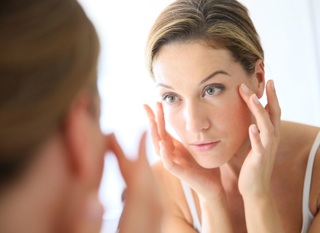
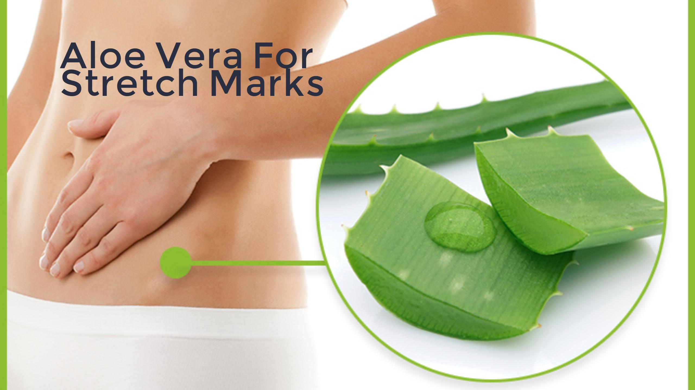
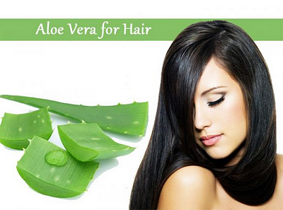
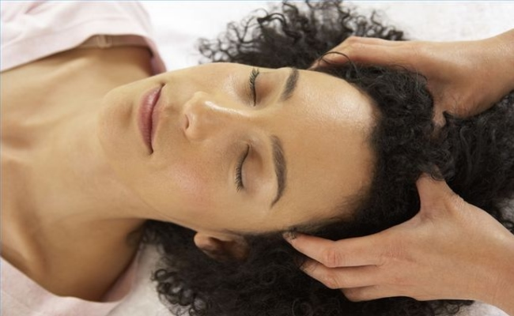

Dhyara
Because You're Worth It!

10 Ways Aloe Vera Can Fix Every Skin and Hair Issues You Have
Being consistently evident through various studies and research that Aloe Vera is the most useful medicinal plant containing a wealth of nutrients - vitamins, minerals, amino acids and antioxidants. It offers a gamut of health benefits which not only pertains to improving the overall well-being but also works as a catalyst in healing wounds, nourishing the hair and hydrating the skin. Aloe Vera is one of the key ingredients used in beauty products and not only does it miraculously improve your skin, but also ameliorates your hair and health as well. So you cannot actually ignore the incredible benefits of Aloe Vera which has a revolutionary effect on your health, can you?
Let us have a look at some of the health benefits Aloe Vera offers to combat skin and hair issues.
Benefits Of Aloe Vera To The Skin
Aloe Vera can work wonders for your skin making it look more fresh and rejuvenated.

1. Moisturizing Agent
Aloe Vera is known to provide nourishment to oily and acne-prone skin by increasing the water content and hydrating your skin. Use it as a face wash or scrub to wipe off all the impurities and give your face a natural glow. Simply peel off the leaf, dig out the Aloe gel and store it in an air-tight container. Gently apply it to your face and wash off with warm water.Tip - Avoid washing your face with hot water, mild water will do the trick.
For prolonged shelf life, refrigerate it.
2. Treatment of Acne, Blemishes and Scars
The regular use of Aloe Vera not only reduces acne and acne scars but also clears any blemishes left behind.Mix 1 tbsp Aloe Vera gel with a few drops of lemon juice (possessing skin lightening properties) and use it as an overnight treatment for better results.
3. Healing Power
When used for topical treatment of insect bites, external cuts, wounds and bruises, Aloe Vera works as an anti-inflammatory and anti-bacterial agent soothing the skin and preventing it from getting infected. Sunburns and tan can also be marginally reduced due to its cooling nature.Apply the gel directly to the affected area and you are good to go.

4. Effective Make-Up Remover
Now getting rid of the make-up will be extremely hassle-free with Aloe Vera. Using it as a natural make-up remover will enrich your skin with natural oils and build a protective layer to save you from the harmful chemicals present in the cosmetics you own.Take a cotton ball and wipe off the harsh chemicals in no time!

5. Best Solution For Stretch Marks
Various studies have shown marginal reduction in stretch marks with repeated use of Aloe Vera and this is the reason why it is recommended during pregnancy as the skin stretches due to rapid weight gain. It is perfect for healing the small tears on the skin and prevent more damage to the elasticity of the skin.Benefits Of Aloe Vera For Hairs
Aloe Vera can work wonders for your skin making it look more fresh and rejuvenated.

1. Deep Conditioning and Nourishment
Aloe Vera cleanses the scalp and hair follicles and can be used to deeply condition your hair and enrich them with vital nutrients. Apply it directly over your scalp and let it stay for a couple of minutes. Rinse off with cold water.
2. Facilitates Healthy Hair Growth
Effectively removing the dead cells from the scalp, Aloe Vera promotes cell regeneration and hair growth thereforth. Dump those harsh hair products for a while and try this revolutionary treatment to get smooth, luscious hair in less than a month's time. Combine 2 tbsp Aloe Vera gel with 1 tbsp Castor oil and massage it onto your scalp. Leave it overnight and rinse off with a mild shampoo in the morning.3. Perfect Solution For Dandruff
Suffering from dry and itchy scalp? Not anymore! Many shampoos and conditioners contain Aloe Vera as the main ingredient and provide relief to dandruff and dandruff-related issues by eliminating the accumulation of oil and dead cells of scalp.Note: Prolonged use will minimalize dandruff and prevent breakage.

4. Maintaining pH Balance Of Scalp
Disrupted pH balance can harm your hair manifolds. By regular use of Aloe Vera one can easily retain the pH balance of 5.5 and restore it together with other endless hair problems that comes with it. You'll see visible difference as your hair grows stronger, healthier and damage-free.Aloe Vera is one of the most versatile plants having immensely unique therapeutic properties and its benefits are countless. With no significant side effects, it can heal almost everything right from constipation to diabetes. What more could you ask for?!
Rightly said, Aloe Vera is truly a 'plant of immortality' fixing every skin and hair issue with great ease and efficacy. Try out different DIY Home Remedies using Aloe Vera and give your skin and hair a glowing touch. You can use them at the ease of your home and get desired results with prolonged use.
Choose Aloe Vera and get exposed to constant nutrition and accelerated health benefits like never before!